МІНІСТЕРСТВО ОСВІТИ І НАУКИ УКРАЇНИ
Ізмаїльський державний гуманітарний університет
Кафедра математики, інформатики та інформаційної діяльності
ЗВІТ
з проходження виробничої (з інтернет-технологій і вебдизайну в освіті) практики
у Ізмаїльському ліцею «Політехнічний» з гімназією
Ізмаїльського району Одеської області
Термін проходження практики:
23.02.2026 – 22.03.2026 р.
Виконав: Студент 4 курсу 42У групи
Факультету управління, адміністрування та інформаційної діяльності
Спеціальність: 014.09 Інформатика
Самур Олексій Юрійович
Керівник практики: Абросімов О. Є.
Захищено з оцінкою _______________
Ізмаїл – 2026
Практику проходив у Ізмаїльському ліцею «Політехнічний» з гімназією
Ізмаїльського району Одеської області з 23.02.2026 р. по 22.03.2026 р.
В період проходження виробничої (з інтернет-технологій і вебдизайну в освіті) практики виконував такі діяльності:
• Створив індивідуальний план проходження практики. (додаток 1)
• Створив паспорт об'єкта практики. (додаток 2)
• Провів первинний аудит цифрового освітнього середовища закладу а також склав карту цифрових ресурсів закладу освіти. (додаток 3)
• Склав рекомендацій щодо оптимізації (вдосконалення) цифрової екосистеми закладу. (додаток 4)
• Розробив опитування для діагностики цифрових компетентностей учасників освітнього процесу, а також провів опитування та зробив його аналіз результатів. (додаток 5)
• Розробив інтерактивні цифрові матеріали для уроків. (додаток 6)
• Модернізував освітній цифровий ресурсу за індивідуальним завданням. (додаток 7)
• Пройшов онлайн-курсі (за тематикою цифрової освіти). (додаток 8)
• Наповнив персональне цифрове портфоліо а також провів комплексний самоаналіз результатів практики. (додаток 9)
Додаток 1
№ з/п | Назви робіт | Термін виконання |
1 | Участь у настановній конференції, проходження інструктажів з охорони праці, цифрової безпеки та академічної доброчесності. | 20.02.2026 |
2 | Ознайомлення з базою практики. Проведення первинного аудиту цифрового освітнього середовища, формування рекомендацій. | 23.02.2026–24.02.2026 |
3 | Консультація з керівником, визначення індивідуального завдання. Розроблення електронної форми опитування. | 25.02.2026 |
4 | Формування концепції розробки/модернізації вебресурсу. Розроблення структури цифрового портфоліо. | 26.02.2026–27.02.2026 |
5 | Проведення опитування з діагностики цифрових компетентностей та аналіз результатів. | 02.03.2026–03.03.2026 |
6 | Розроблення інтерактивних цифрових матеріалів для уроків. | 04.03.2026–06.03.2026 |
7 | Розроблення або модернізація освітнього (управлінського) цифрового ресурсу за індивідуальним завданням. | 02.03.2026–18.03.2026 |
8 | Участь у вебінарі / онлайн-курсі (за тематикою цифрової освіти). | 23.02.2026–19.03.2026 |
9 | Наповнення персонального цифрового портфоліо. Комплексний самоаналіз результатів практики. | 16.03.2026–19.03.2026 |
10 | Оформлення індивідуального плану, звіту з практики, підготовка презентації до захисту. | 20.03.2026 |
11 | Закінчення практики. | 22.03.2026 |
Додаток 2
Паспорт об’єкта практики
Ізмаїльський ліцей «Політехнічний» з гімназією
Ізмаїльського району Одеської області
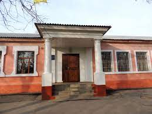
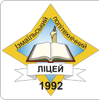
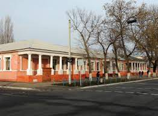
ЗАГАЛЬНІ ВІДОМОСТІ
Адреса навчального закладу: 68600, Одеська область, Ізмаїльський район, місто Ізмаїл, проспект Незалежності, 53.
Електронна адреса: izm_sh_ipl@i.ua, 23210728@mail.gov.ua
Сайт навчального закладу: http://www.ipl.net.ua
Директор: Сіраєва Ольга Георгіївна
Тел/факс: (04841) 20128
Тип закладу: ліцей з гімназією
Мова навчання: українська
Учнів: 336
Класів: 18
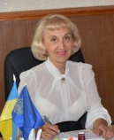
Педагогічних працівників: 37 (крім того сумісників 1)
Технічних працівників: 16
Рік забудови: 1992
Наявність укриття: Так
Площа закладу: 2 350,0 м2
Потужність закладу: учнів 420, працівників 65, з них педагогічних 45
Директор: Сіраєва Ольга Георгіївна
Додаток 3
Технічне оснащення:
Комп’ютерний парк: У кабінеті встановлено 12 робочих місць для учнів та 1 місце вчителя. Використовуються системні блоки на базі процесорів Celeron (2.2–2.5 ГГц) з об'ємом оперативної пам'яті 2 ГБ та монітори Asus серії VW.
Мережеве обладнання: В наявності 2 Wi-Fi роутери, які забезпечують стабільне покриття та бездротовий доступ до мережі Інтернет по всьому кабінету. Стан обладнання - задовільний, швидкість з'єднання відповідає поточним потребам.
Мультимедіа: Кабінет оснащений інтерактивною дошкою. Обладнання перебуває у робочому стані, відкаліброване та готове до використання у навчальному процесі.
Виявлені проблемні місця:
Застаріла апаратна частина: Більшість системних блоків придбані у 2010 році. Об'єм оперативної пам'яті (2 ГБ) та використання застарілих HDD-накопичувачів значно обмежують швидкість роботи сучасних ОС та професійного софту (наприклад, важких графічних редакторів або засобів розробки).
Програмне забезпечення: Через обмежені ресурси заліза існує складність у використанні актуальних версій хмарних сервісів та інтерактивних платформ, що потребують високої потужності браузера.
Цифровізація предметних кабінетів:
У закладі успішно впроваджуються технології візуалізації: 6 кабінетів загальноосвітніх дисциплін (математика, історія тощо) оснащені інтерактивними дошками. Це створює умови для міжпредметної інтеграції цифрових ресурсів, створених під час практики.
Адміністративний та допоміжний сектори:
Бібліотека: Наявне 1 робоче місце з комп'ютером, що забезпечує доступ до електронних каталогів та освітніх ресурсів для самостійної роботи учнів.
Бухгалтерія: 2 робочих місця, обладнані окремим Wi-Fi роутером для стабільного функціонування внутрішніх мереж та подання звітності.
Загальна кількісна характеристика цифрової техніки закладу
Тип обладнання | Кількість (шт.) | Локалізація та стан |
Комп’ютери Системні блоки | 28 | 13 - у Каб. №11 (Celeron), 12 - у Каб. №12 (Athlon), 2 - у Бухгалтерії, 1 - у Бібліотеці. |
Інтерактивні дошки | 7 | Каб. №11 та 6 - у навчальних кабінетах загального циклу. Стан - робочий. |
Wi-Fi роутери | 3 | 2 одиниці - у Каб. №11 (забезпечують зону покриття інформатики) та 1 - у Бухгалтерії. |
Монітори | 28+ | Переважно серії Asus VW та аналоги, згідно з інвентаризаційними відомостями. |
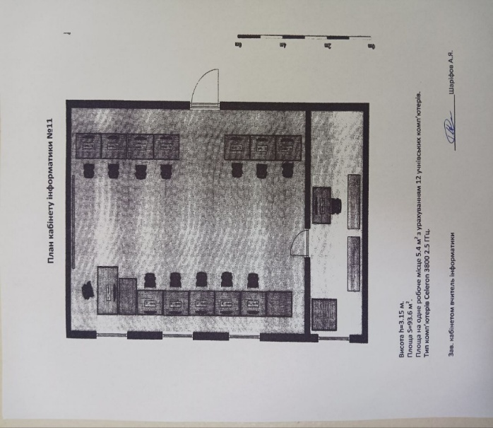
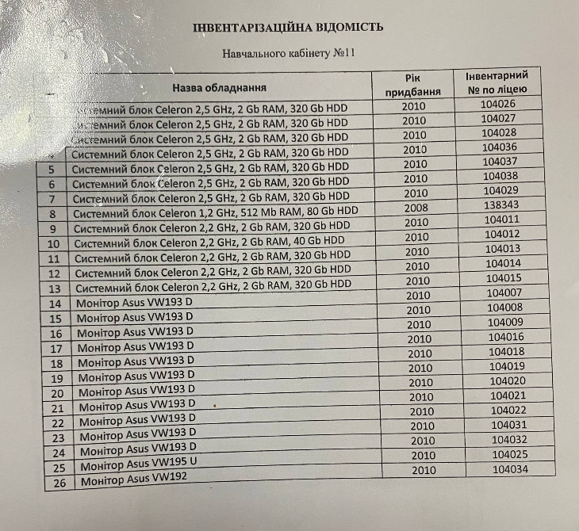
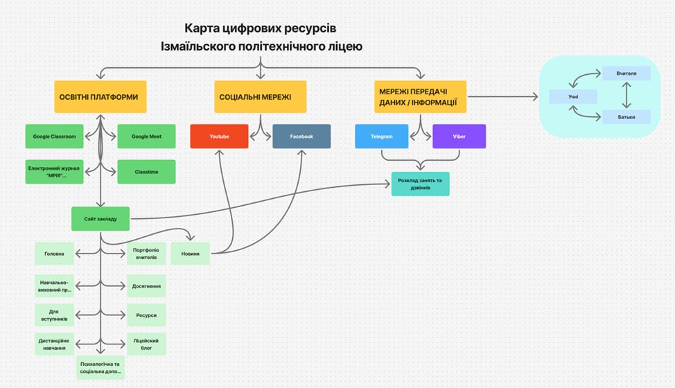
Додаток 4
Рекомендації щодо модернізації та розвитку цифрового середовища
Технічна модернізація (Hardware)
Пріоритет №1 (Кабінет №11): Здійснити апгрейд оперативної пам'яті з 2 ГБ до 8 ГБ у системних блоках Celeron. Це критично для стабільної роботи сучасних браузерів та Google-сервісів.
Заміна накопичувачів: Поступово замінити застарілі HDD на SSD-диски (навіть мінімального об'єму 120-240 ГБ). Це пришвидшить завантаження системи в 5 –10 разів і «оживить» старі комп'ютери.
Перерозподіл ресурсів: Оскільки в Кабінеті №2 стоять потужніші Athlon (8 ГБ RAM), рекомендується перенести туди частину занять, що потребують роботи з відеомонтажем, 3D-моделюванням або складним програмуванням.
Методичне вдосконалення (Software & Process)
Впровадження BYOD (Bring Your Own Device): Оскільки в кабінеті №11 є 2 робочих роутери, можна дозволити учням використовувати власні смартфони/планшети для швидких опитувань (Kahoot, Mentimeter), щоб не перевантажувати слабкі ПК.
Хмарна орієнтація: Максимально перенести навчальний процес у Google Workspace для освіти. Робота в хмарі знімає навантаження з процесорів (Celeron), оскільки основні обчислення відбуваються на серверах Google.
Використання мультимедіа: Активізувати використання 6 інтерактивних дошок у предметних кабінетах. Рекомендується провести для вчителів-предметників майстер-клас із використання інструментів (наприклад, Canva або Miro) безпосередньо на цих дошках.
Організаційні заходи
Єдиний цифровий реєстр: Створити хмарну таблицю моніторингу стану техніки(на основі інвентаризаційної відомості), де вчителі зможуть оперативно відмічати несправності периферії (мишки, клавіатури).
Кібербезпека: Враховуючи наявність роутерів у бібліотеці та бухгалтерії, необхідно налаштувати роздільні мережі (VLAN) для адміністративних потреб та загального користування учнями.
Додаток 5
АНАЛІТИЧНА ДОВІДКА
Аналітичний звіт за результатами оцінювання цифрових навичок педагогів
Цей аналіз базується на результатах діагностики цифрових компетенцій наших працівників. Метою було не просто виставити бали, а зрозуміти, де ми впевнено стоїмо на ногах, а де нам потрібна підтримка для ефективнішої роботи в онлайн-середовищі.
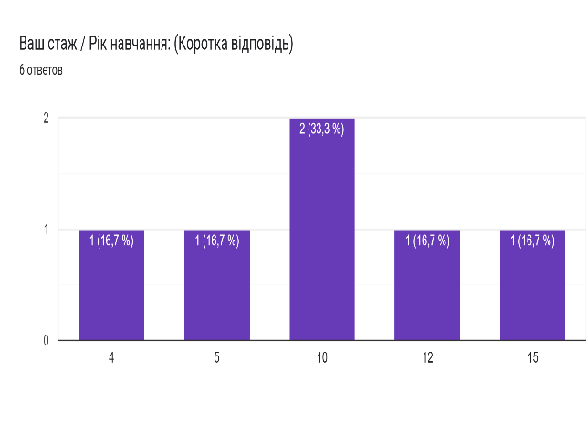
Основу нашої вибірки (понад 66%) становлять досвідчені педагоги. Це люди з вагомим стажем (переважно близько 10 років), що свідчить про сформований професійний підхід, але водночас ставить питання про необхідність адаптації до нових технологій.
Щодо інструментарію, то «класика» залишається в пріоритеті: 83,3% працюють за комп’ютерами або ноутбуками. Смартфони сприймаються як допоміжний засіб лише половиною колег, а планшети взагалі не розглядаються як робочий інструмент. Це важливо враховувати при плануванні подальшого навчання - орієнтуватися варто саме на десктопні версії сервісів.
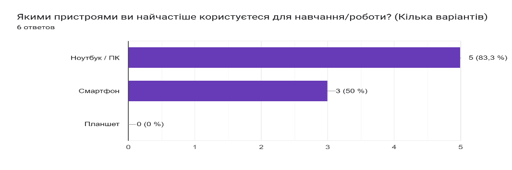
Ми маємо чудовий показник у роботі з хмарними технологіями. Дві третини колективу (66,7%) активно використовують Google Drive чи OneDrive. Це означає, що ера «флешок» поступово минає, а культура зберігання даних стає сучасною.
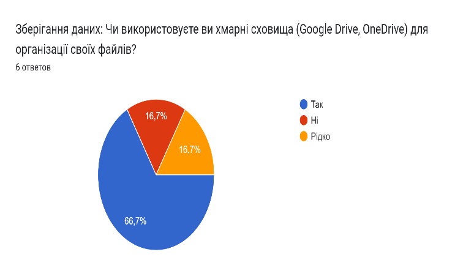
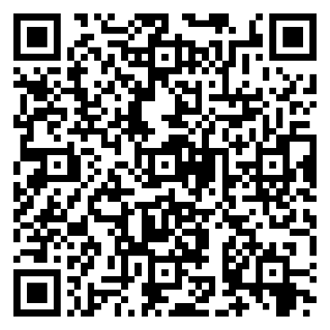
Проте ми виявили «зону ризику»: критичне оцінювання інформації. Здатність розрізняти фейки та перевіряти джерела у респондентів дуже різна - від повної впевненості до серйозних труднощів. В епоху інформаційних війн це той напрямок, який потребує негайної уваги та навчання фактчекінгу.
У питанні етики ми маємо ідеальний результат - 100% розуміння етикету. Педагоги чітко знають, як поводитися в цифровій мережі. Також половина опитаних є «майстрами контенту», які на високому рівні створюють презентації та відео.
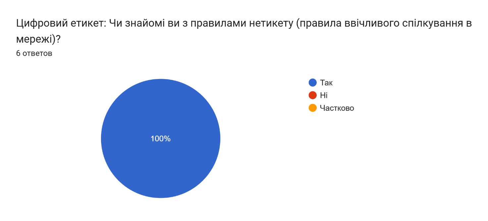
Але є два нюанси, над якими варто попрацювати:
• Цифрова колаборація: Хоча ми активно використовуємо Zoom та Classroom, інструменти для спільної роботи (як-от одночасне редагування документів) використовують лише 16,7%. Ми звикли працювати індивідуально, а не в команді онлайн.
• Авторське право: Кожен другий колега відчуває невпевненість у питаннях ліцензій (Creative Commons) та легального використання чужого контенту.
Приємно вразив рівень кібербезпеки та турботи про здоров'я (83,3%). Двофакторна автентифікація та вправи для очей - це вже норма для нашого колективу.
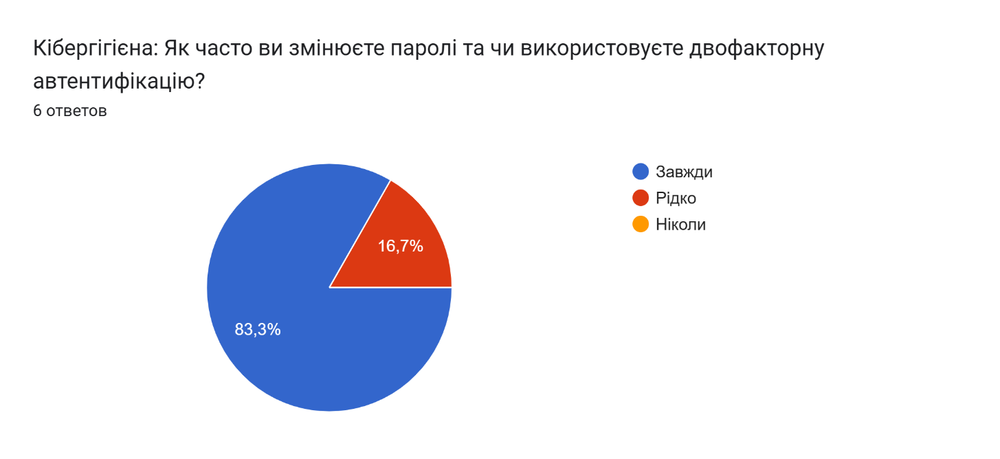
Цікаво виглядає модель розв'язання технічних проблем: ми покладаємося один на одного. Більшість іде за порадою до колег, і лише третина шукає відповіді в Google. Це свідчить про сильну горизонтальну підтримку в колективі, яку варто підтримувати.
Попри те, що на момент опитування ніхто не проходив спеціалізованих курсів, ми маємо величезний потенціал: 83,3% колег виявили бажання вчитися. Є чіткий запит на розвиток, і це найголовніший результат діагностики.
Додаток 6
Розробка інтерактивних цифрових матеріалів для уроків
Я розробив інтерактивні цифрові матеріали для навчального процесу. Для створення цих завдань я успішно використав платформу LearningApps, що дозволило мені зробити навчання більш залученим та сучасним.
У першому завданні під назвою «Назва компоненту», учням пропонується ідентифікувати та вписати назви чотирьох основних комплектуючих комп'ютера. Я підготував картки із зображеннями процесора, відеокарти, блока живлення та материнської плати, під якими учні мають написати правильні відповіді.
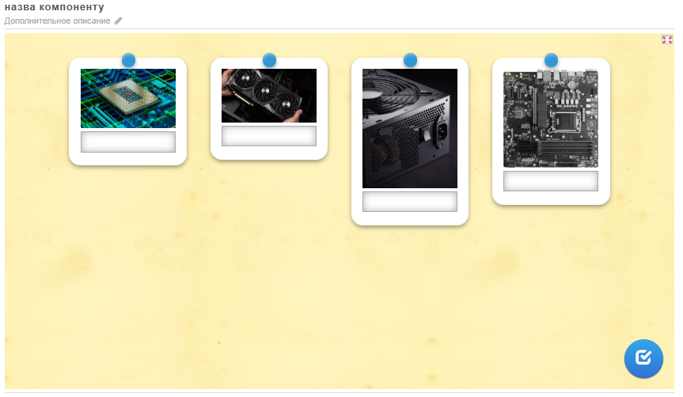
У другому завданні під назвою «ЕОМ», я створив інтерактивну шкалу часу. Завдання учнів полягає в тому, щоб вибрати історичну ЕОМ та перетягнути її зображення на відповідний рік її створення на таймлайні, тим самим правильно розмістивши її в хронологічному порядку.
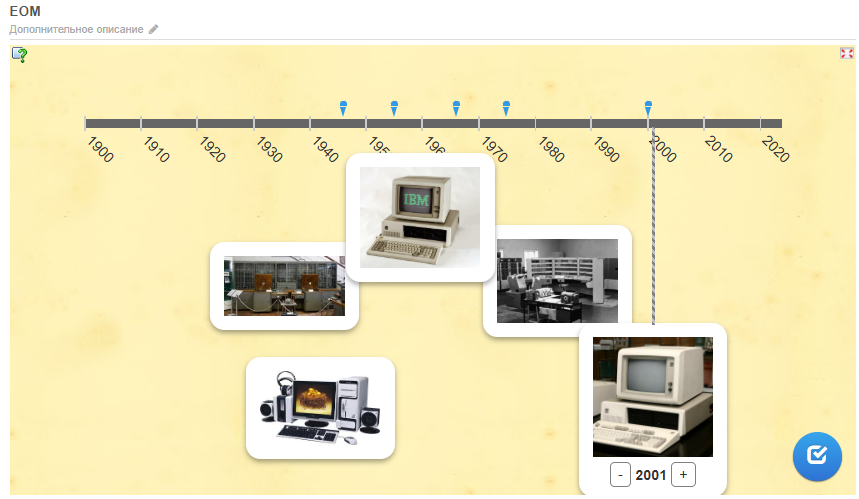
Це наочний приклад того, як я впровадив сучасні цифрові інструменти в освітній процес.
Додаток 7
Модернізція освітнього цифрового ресурсу за індивідуальним завданням
Під час консультації з керівником практики від університету, на було запропоновано індивідуальне завдання щодо модернізації освітнього веб-ресурсу. Для того, щоб процес модернізації освітнього цифрового ресурсу був максимально ефективним, ми вирішили розподілити обов'язки всередині нашої команди. Робота була розділена на три ключові напрямки, кожен з яких мав свою зону відповідальності, що відображено в нашій робочій таблиці.
Я взяв на себе роль UI/UX Дизайнера та Frontend-розробника. Моя робота була зосереджена на технічному втіленні візуальної концепції та забезпеченні зручності користування сайтом. Основні завдання, які я виконав:
• Розробка структури та стилю: Я працював над HTML-каркасом та CSS-стилізацією сторінок.
• Адаптивність: Створив верстку, яка коректно відображається як на комп'ютерах, так і на мобільних пристроях.
• Функціональні елементи: Я розробив навігаційне меню, стилізував таблицю розкладу (schedule.html) та створив зручні картки для розділу з викладачами.
Інші учасники команди відповідали за такі напрямки.
• Контент-менеджер та Копірайтер: займався наповненням сайту. Він готував тексти для розділів, структурував розклад занять та оптимізував графічний контент, щоб сайт завантажувався швидше.
• Веб-майстер та Тестувальник: забезпечував технічну стабільність. Його робота полягала у розгортанні сайту на хостингу GitHub Pages, налаштуванні внутрішньої навігації (якорів типу #top) та фінальній перевірці роботи ресурсу на різних гаджетах.
Завдяки такому чіткому розподілу ролей нам вдалося не просто оновити дизайн, а створити цілісний, зручний та технічно справний інструмент для нашого закладу.
.
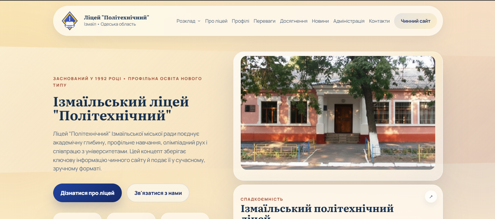
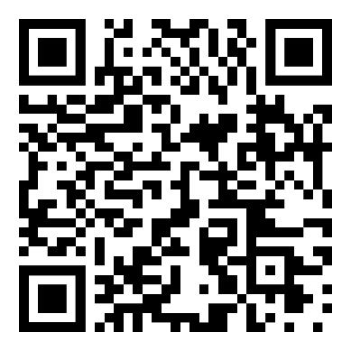
Чинний сайт:
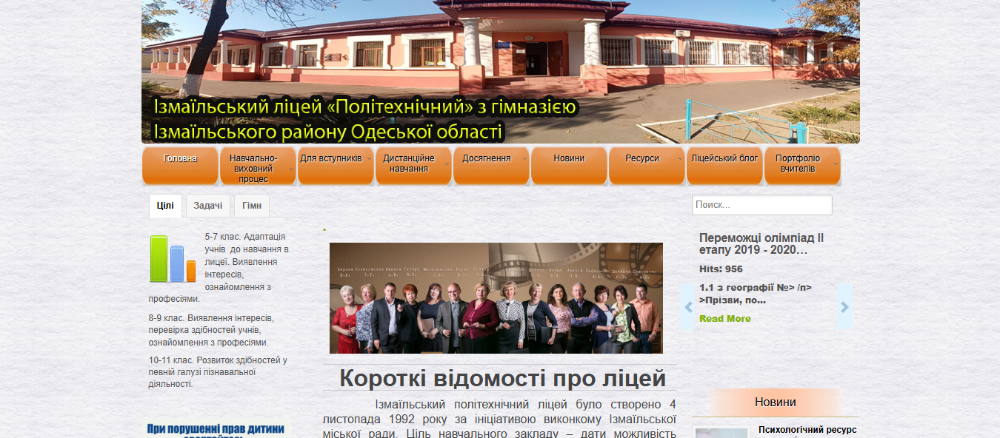
Додаток 8
Під час практики пройшов онлайн-курсі (за тематикою цифрової освіти).
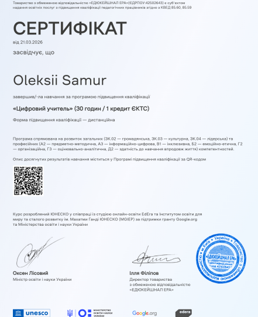